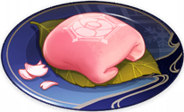
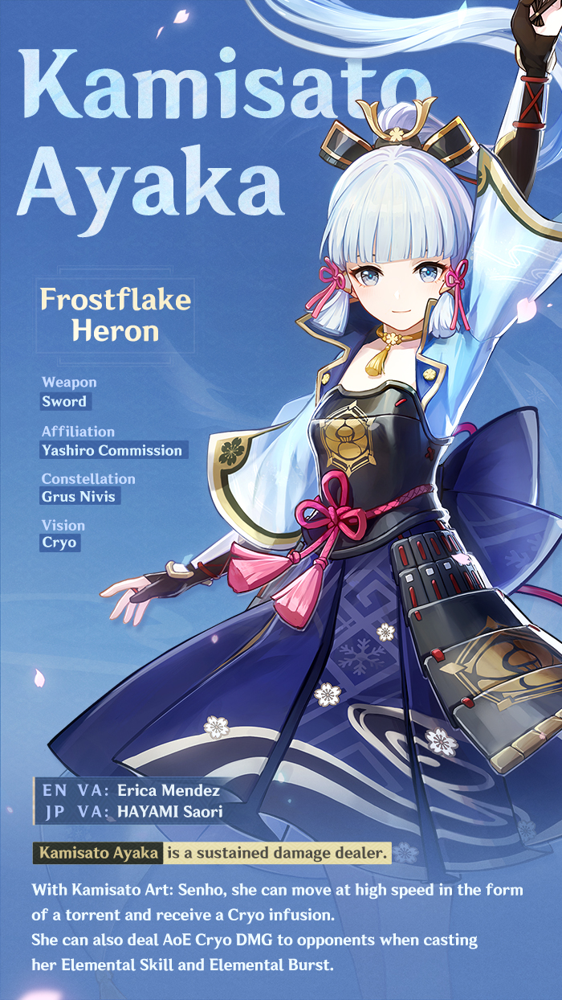

Kamisato Ayaka
Kamisato Ayaka is a playable Cryo character in Genshin Impact.
She is the eldest daughter of the Kamisato Clan and sister of Kamisato Ayato. Being beautiful, elegant, and graceful, the common-folk have nothing to bad-mouth Ayaka about.
Because of her social status as the eldest daughter of the Kamisato Clan of the Yashiro Commission and as the Shirasagi Himegimi, Ayaka is seen as a model of perfection.
Sex : Female
Birthday : September 28th
Constellation : Grus Nivis
Region : Inazuma
Special Dish : "Snow on the Hearth"
